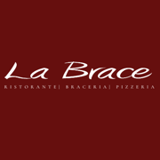
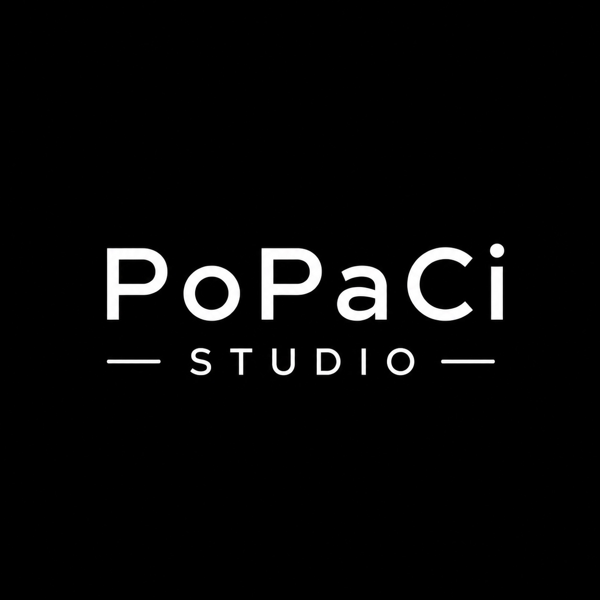
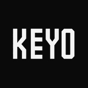
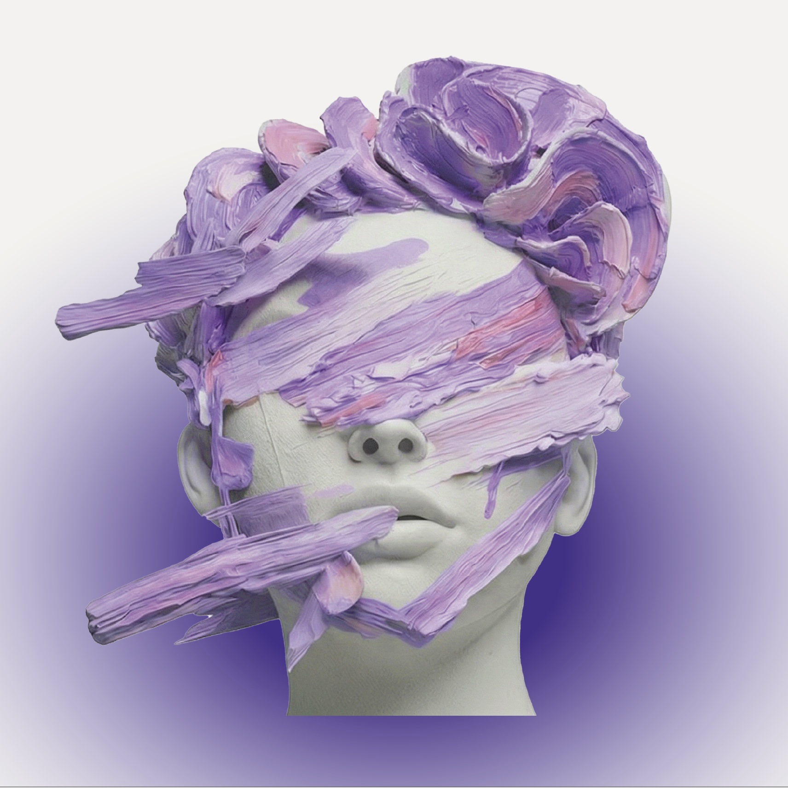
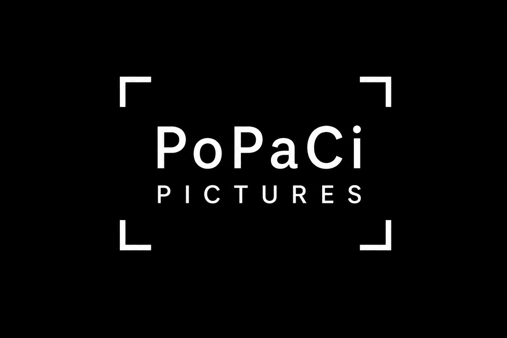

Apps & Websites
Here you'll find the apps and websites I've built, some made for myself to explore new technologies, others created at the request of people who trusted me with their projects.
La Brace
WEBSITE
La Brace is a steakhouse and pizzeria in Manno, near Lugano, specialising in dry aged meat cooked over open coals. The owners wanted to leave behind a dated WordPress site and get something that felt like the restaurant itself, so I built the whole thing from scratch as a cinematic, bilingual showcase: a full-screen video hero that opens up as you scroll, kinetic typography, a horizontal gallery driven by the scroll and the à la carte and wine menus served from a single data file the staff can update on their own. It's hand-coded in vanilla HTML, CSS and JavaScript with GSAP and Lenis, with self-hosted fonts and a consent-gated map so that no data leaves the site before the visitor agrees.

PoPaCi Studio
WEB APP
PoPaCi Studio is the internal management platform I designed and built from the ground up for PoPaCi and the Merge Film Festival team — my first large-scale full-stack project. It brings the whole studio into a single private, invite-only workspace: a Celtx-style screenplay editor with PDF export, project boards with granular visibility, a shared production calendar, team to-dos, a chat with video calls, a collaborative whiteboard and a dedicated festival module. It's built with React (Next.js 15) and TypeScript on top of Supabase (PostgreSQL, Auth, Storage), with Row Level Security enforced server-side, and deployed on Vercel.

Keyo Tattoo Studio
WEBSITE
Keyo Tattoo Studio was a more complex but truly fascinating project. The owner wanted to preserve the studio's established brand identity while adopting a style very close to that of a New York tattoo studio's website. In the end, we achieved exactly the result we were hoping for, and he was thrilled with it.

Echo Maze
WEBSITE
Echo Maze is my first single-player metroidvania — an idea I had been carrying around for a while and finally brought to life. It runs straight in the browser as a website, with no downloads, no loading screens, and free for everyone. The gameplay is fast, dynamic, and engaging, designed to pull you in from the very first move.

Samuel Rhawi By Nursel
WEBSITE
This was my first website for a more established fashion business: Samuel Rhawi, a recognized leather and luxury clothing brand with an important presence in Istanbul. The goal was to create a refined online identity for the Lugano boutique, presenting Nursel's showroom as the local Swiss home of the maison while keeping a clear connection to the brand's wider story.

Ondus Tattoo
WEBSITE
Ondus Tattoo, based in Lugano, marked my first step into creating websites for independent businesses without an online presence. By listening closely to the owner’s style and intentions, I translated their identity into a fluid and dynamic website — staying true to their aesthetic while making it work naturally in a digital space.

Merge Film Festival
WEBSITE
Merge Film Festival is the first Swiss festival dedicated to audiovisual works created with artificial intelligence. Founded by my colleagues from CISA — who started the company PoPaCi — they asked me to build their digital home: a minimal, elegant, and fluid portal where visitors can discover what the festival is about, how it works, and what to expect. The site launched in May 2026.

PoPaCi
WEBSITE
I created the website for PoPaCi, a company founded by my former colleagues from film school. Following this collaboration, I joined the company as its CTO (Chief Technology Officer), managing its IT infrastructure and digital presence — including the development of their website and other technical aspects. The site launched in May 2026.

Pronto Pizza da Fabio
WEBSITE
This was my first published website for a real business — a restaurant and pizzeria that had been operating for years but had no online presence yet. It gave me the chance to put myself to the test by building and launching a site for an already established, active business.

TurnTale
APP
TurnTale is a narrative game that breaks the mold of typical mobile games: it has real objectives — no endless grind, no pointless loops. It's built for asynchronous multiplayer, so you and your friends share the same story without ever needing to be online at the same time. Take your turn when you want, pick it back up later. Still in beta — grab some friends and give it a go.

WeathAff
APP
WeathAff is a weather app built as a Progressive Web App — usable directly from the browser and installable on your smartphone like a native app. I made it for myself as my first dive into the world of app development. Simple, fast, and personal.

GO HOME